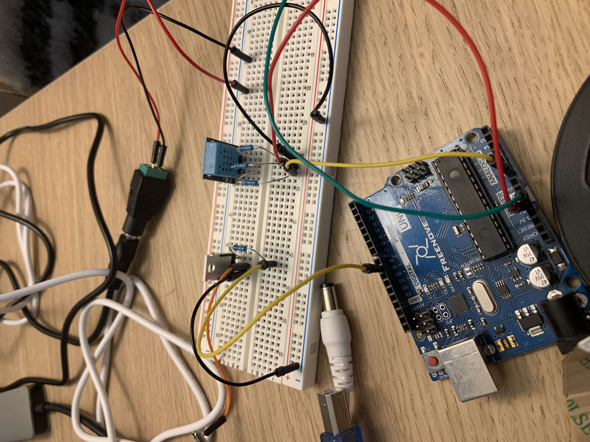

Assignment 5: Libraries!

In this project, I used the humidity sensor with the transistor to turn the LED lights on and off above and below a certain temperature. However, unfortunately through the process I ended up accidentally frying my arudino board and humidity sensor when trying to readjust and shift wires. Throughout I used 220 Ohms resistors and 1000k resistor to counteract voltage.
#define dht_apin A0 // Analog Pin sensor is connected to
const int transistorPin = 9;
dht DHT;
void setup(){
Serial.begin(9600);
delay(500);//Delay to let system boot
Serial.println("DHT11 Humidity & temperature Sensor\n\n");
delay(1000);//Wait before accessing Sensor
}//end "setup()"
void loop(){
//Start of Program
DHT.read11(dht_apin);
Serial.print("Current humidity = ");
Serial.print(DHT.humidity);
Serial.print("% ");
Serial.print("temperature = ");
int F = ((DHT.temperature * 9.0 ) / 5.0 + 32);
Serial.print(F);
Serial.println("F ");
delay(2000);//Wait 2 seconds before accessing sensor again.
//Fastest should be once every two seconds.
if (F < 70)
analogWrite(9, 0);
else if (F > 70)
analogWrite(9, 255);
}// end loop()